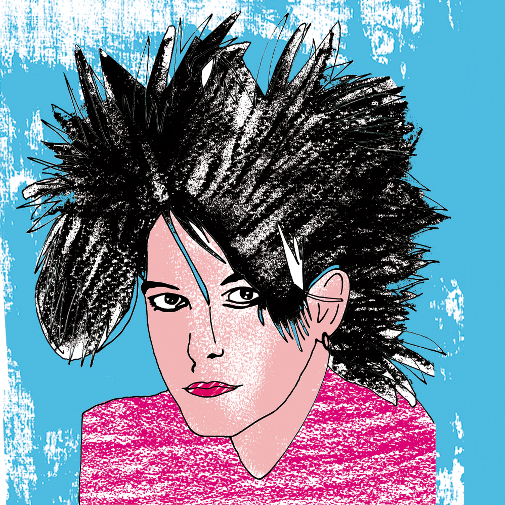
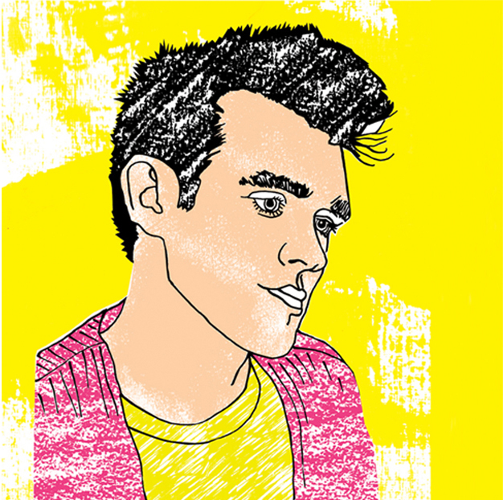
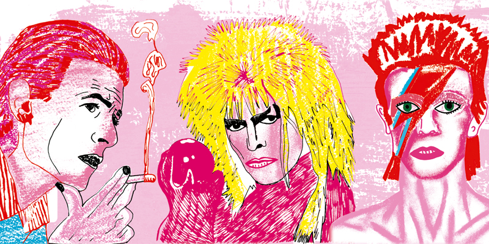

Proyecto personal del año 2020. Elaboración de ilustraciones de artistas musicales armadas para poder sublimarlas sobre tazas y otros productos sublimables. Se usaron técnicas mixtas: desde pastel y microfibra hasta su posterior digitalización en Adobe Photoshop. Se trabajó sobre una paleta acotada, mayormente rojizas, amarillas y rosadas para remitir a un estética POP, fresca y moderna.


Proyecto universitario del año 2019. Elaboración de 12 páginas (mínimo) de un Libro Álbum. El poema fue dado y asignado por los docentes durante la cursada de Cátedra Roldán (FADU-UBA). El formato del mismo era a consideración del alumno. El concepto giró entorno al extremismo y la intensidad emocional en las relaciones amorosas.
Escrito por Francisco Bitar. Se buscó dar una concepción propia de lo que el texto transmitía. Recurriendo al uso de técnicas mixtas: desde manuales (acrílico, pastel, aerosol, acuarela, microfibra, collage) hasta la digitalización de los originales en Adobe Photoshop, que le proporcionó una unificación de las técnicas y una acotada paleta de colores.